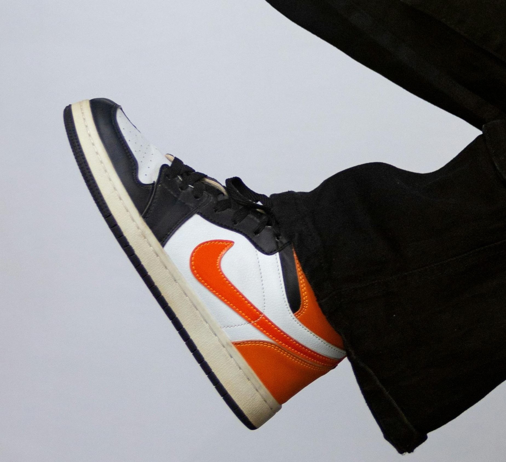

Card responsive!

Air Jordan 1
The Air Jordan 1 was the first sneaker model in the Air Jordan line, launched in 1985. The model's design was created by designer Peter Moore.
Jordan One
The Air Jordan 1 was the first sneaker model in the Air Jordan line, launched in 1985. The model's design was created by designer Peter Moore.
Jordan One
The Air Jordan 1 was the first sneaker model in the Air Jordan line, launched in 1985. The model's design was created by designer Peter Moore.